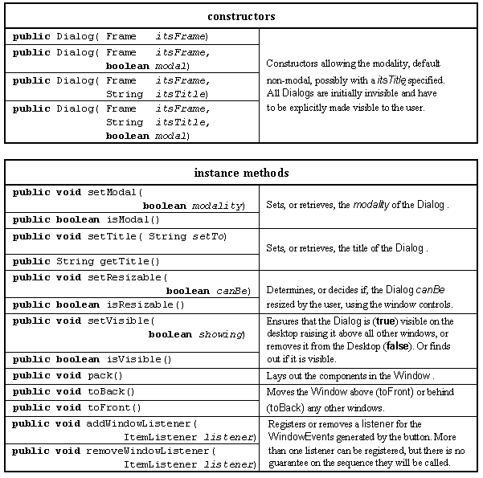

The remainder of this chapter will introduce the three dialogs shown at the bottom of the context diagram in Figure 6.4. The presentation of a dialog to a user is an essential and valuable part of a wide variety of user interfaces. The pattern of construction and use which will be established in this part of the chapter can be used a template upon which more advanced dialogs can be constructed. All three of these classes providing the dialogs extend the Dialog class whose major resources, including those inherited from the Window class, are given in Table 6.6.

Table 6.6 Major resources
of the Dialog class,
including those inherited from Window .
A Dialog is an extension of the Window class which in turn is an extension of the Container class and hence can control the layout of its instance children. A Dialog is constructed in an invisible state and should be packed after its instance children are added, before it is shown using setVisible() with the argument true. Once visible its stacking relationship with other windows can be controlled with toFront() and toBack(). When it is no longer required it can be hidden by using the Component setVisible() method with the argument false.
A modal dialog will prevent the user from having any other interactions with the application until it has been attended to and dismissed, and will always remain in front of any other windows. In contrast a non-modal dialog does not prevent the user from interacting with the application whilst it is posted and can be hidden behind other windows.
Design Advice
Modal dialogs should be only used when the functionality of the application depends on the modality. In general non-modal dialogs should be favoured.
The user can iconify, maximize, minimize and close the window using the window controls supplied by the peer environment and these will cause appropriate WindowEvents to be generated. The user can only resize a window, using the window controls, if its resizable attribute has been set also generating a WindowEvent. All WindowEvents can be intercepted by the registered windowListener and the requested methods confirmed or denied. Examples of handling WindowEvents will be given below.
There are two design approaches to using Dialogs, and other sub-windows, within an application. The first approach is to create all the windows in an invisible state as the application initializes itself. These windows are then shown in response to the user's actions and are subsequently hidden when they are no longer required. The alternative approach is not to create any windows upon initialization but to create them each time they are required and destroy them when they are no longer required.
The first approach causes the time an application takes to initialize itself to increase but allows a window to be posted very quickly. The second approach allows an application to appear faster but there may be a delay when a sub-window is requested by the user. In practice a combination of these approaches can be used with windows which are frequently required, or whose contents do not change, being created as the application is initialized. Those windows which are infrequently required, or those whose contents change each time they are shown, being created upon demand. Both of these techniques will be used in the remainder of this book.
A more advanced approach to this problem may involve the construction and presentation of the main window to the user as quickly as possible on the artifact's main thread. At the same time the dialogs can be constructed on separate threads which have a lower level of priority. The user can then commence work with the application as quickly as possible, with Java preparing the dialogs when it is not busy attending to the user. Details of this technique are outside the scope of this book.